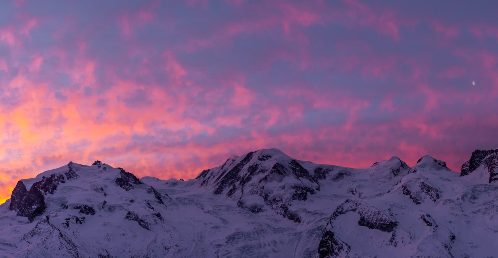
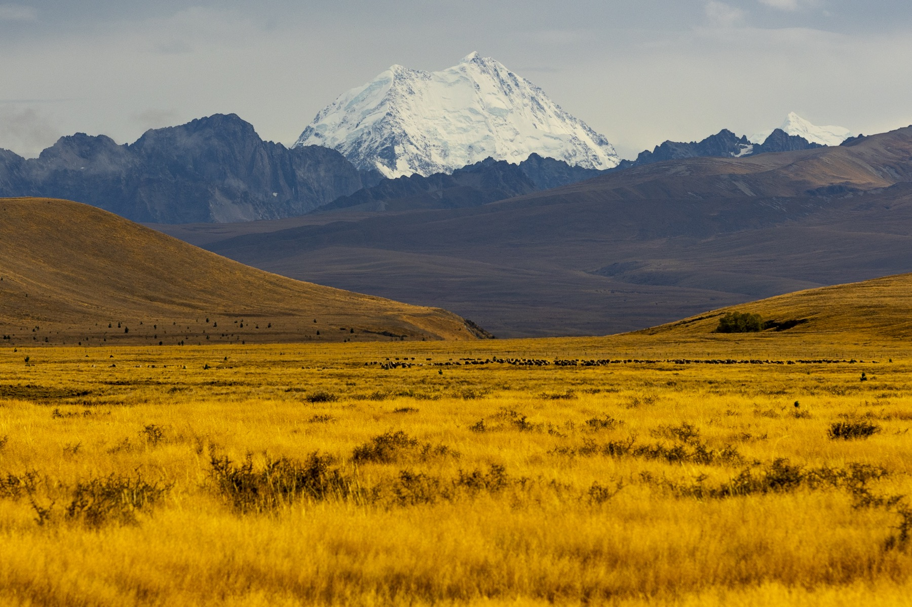
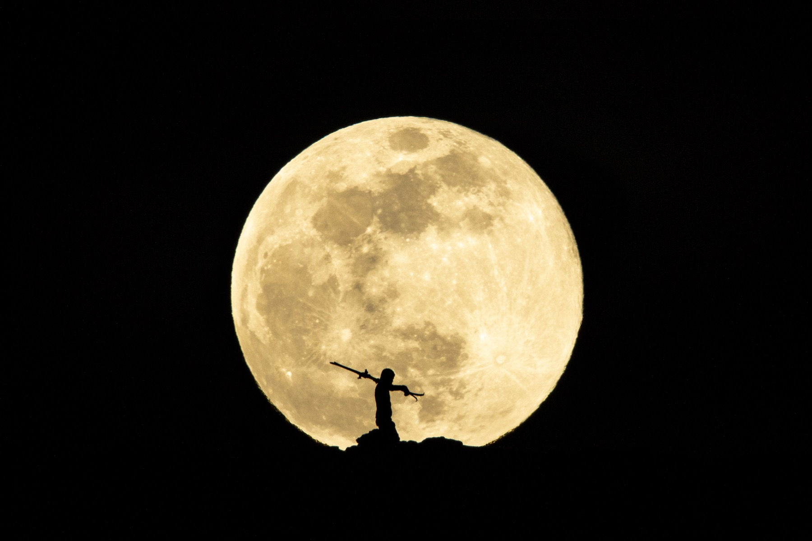

An image library for the expedition
Photographs of the route, guiding team, camps and travellers for your website, trip pages and presentations to travel partners.
 CONSERVATION CARAVAN SAFARIS
CONSERVATION CARAVAN SAFARISBring your Kilimanjaro expedition to life through the people, places and moments that make the journey.
Explore the idea ↘THE OPPORTUNITY
Your Machame Route offers much more than a summit. It is a journey through changing landscapes, shared effort and the knowledge of the local team.
I propose joining an expedition to create a photographic and film library that helps future climbers understand the experience — from the first steps to the final descent.
SEE THE CREATIVE APPROACH ↗A STORY BUILT AROUND YOUR EXPEDITION
Choose a chapter to explore the proposed visual story.
The changing terrain, the rhythm of the climb, the camp at the end of a long day. Show the experience travellers are signing up for, not just the destination.
BEHIND THE CAMERA
I lived in Switzerland for ten years, working around mountain environments and outdoor sports. These are photographs from my existing travel portfolio; new images for your campaign would be created in Tanzania.



WHAT THE PRODUCTION CAN SUPPORT
Photographs of the route, guiding team, camps and travellers for your website, trip pages and presentations to travel partners.
Video of the climb and its behind-the-scenes moments, shaped around the questions and aspirations of future guests.
Use the material to create your own campaign, or develop the concept and final campaign together. Deliverables and usage rights agreed for the project.
WORKING TOGETHER
We would plan the production around the route and your commercial priorities, working alongside your guides and local team. The duration, logistics and final materials are defined together.
Portraits and community stories would be developed with the people involved and with their permission.
FITUR 2027 · MADRID
I’d love to hear which experiences you want to promote and explore how photography and film could help.
Explore my work ↗